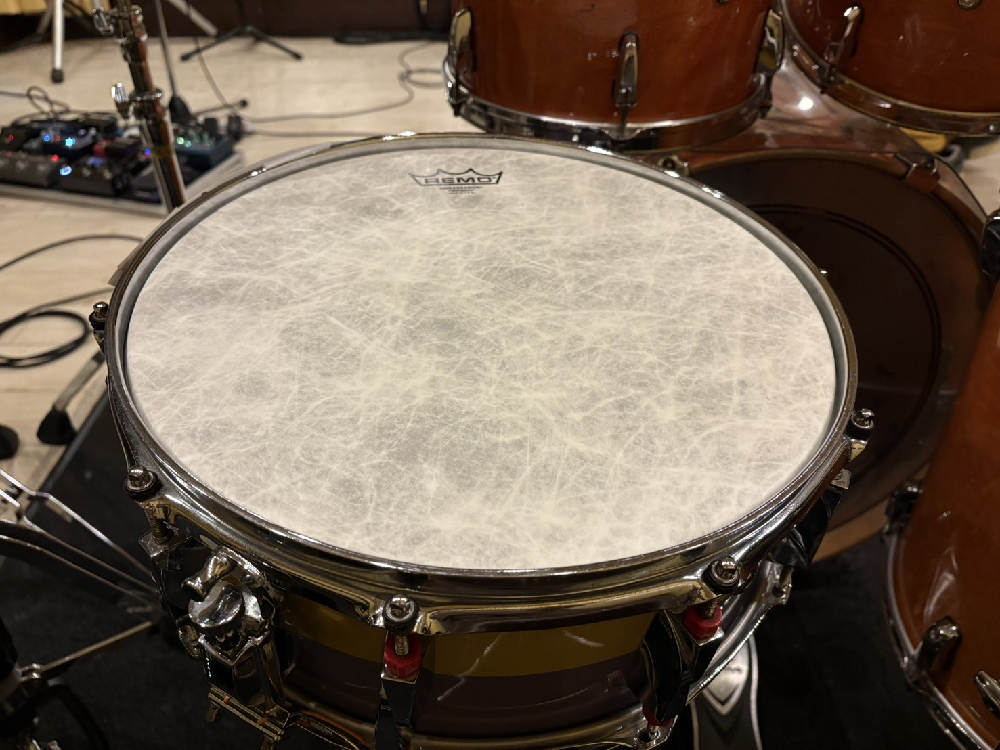
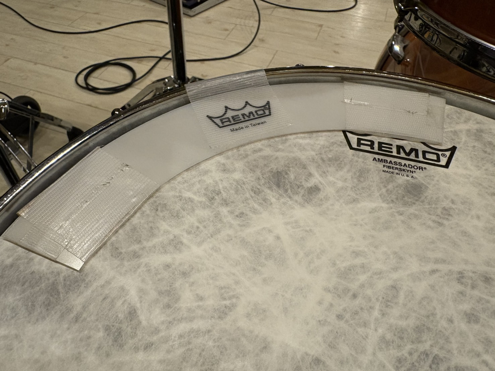

週刊東山通信 第12回【有言実行】機材紹介①投稿日：2026年5月7日 ｜ 執筆：せるお 今回は私の使用機材を紹介していく。 読んでいる人に届けたいというよりは、むしろ覚え書きとして文字に起こすことで、自身のドラムについて再認識したりできるかなと。そういう機会にしたい。 早速行こう。 ・スティック：VATER VH7AW（Manhattan 7A）打楽器を始めた当初から愛用しているVATER社。ここ1~2年ぐらいはずっとこのマンハッタン7Aを使っている。というのも、長らく同じものを使いすぎて、もうこれでしか叩けなくなってしまったのである。これより細い、軽いスティックでは音圧や耐久性に心配が残るし、これより太い、重いスティックはもう、手とか腕とか痛くなっちゃう。情けない話だ。 なぜVATERなのかというと、軽くて叩きやすい割に意外と丈夫なのである。他に使ってきたスティックと比べても折れにくいような気がする。でもそもそも世のドラマーはどのぐらいの頻度でスティック折れるんだろう。スティックが折れると、わりかし高確率で心も折れる（叩き方が悪いのかなぁ、、等で）ので、皆がどのぐらいのペースでスティック折ってるのか、とても気になる。 ・スネア：CANOPUS SGTR-1455 TH1スネアはType-Rの、東京事変のドラマー・刄田綴色のシグネチャーモデル。前回の私の回から何度も口にしている刄田綴色の名前だが、好きが高じてとうとうスネアまで買ってしまっている。これを購入したのは2024年の4月頃。もう丸2年も経つらしい。 サイズは14"×5.5"と標準的で、木材はyellow birch。トリプルフランジフープ。サウンドとしては、ハイピッチだと高音域がスコーンと抜けて、ローピッチだとしっかり下から音が鳴って、支える仕事をしてくれている、倍音も豊か、皮ではなくしっかりと胴が鳴るような印象。それと、なんと言っても魅力は黄色と紫のツートン塗装である。かわいい。。。。 ヘッドには、半年ほど前からコーテッドアンバサダーではなくファイバースキンを張っている。高音成分が少し抑えられて、暖かな感触になるのでとても良い。 また、スナッピーはPearlのもの（20本、スチール製？）を付けている。理由は高校の吹奏楽部で使ってたのがこのスナッピーだったから。なんだかいい音がする（ような気がしている）。40本のやつとか、試したいけど、高いし、、、買えないし、、。 加えて、ここ半年ぐらいは、リングミュートを4分割してひとつに重ねて、ミュートとして使っている。それまではリングミュートをそのままの形で使っていたが、それだとどうしてもミュートされすぎてしまう場面が多かった。今のやり方では、適度に余計な倍音を抑えて、マイク乗りの良い絶妙なサスティーンを出してくれるのでとても気に入っている。  《せるスネアの画像》  《ミュートのアップ画像》 ・ペダル：TAMA HP900PN IRON COBRA Power GlideTAMAの名ペダルこと、アイアンコブラ900。サークルのコピバンでは純正のまま使っていることが多いが、木魚人のときはビーターにDWのSM101を使用。より存在感を増した音になるので、ひょろひょろの私の脚からはおよそ出せなかったであろうサウンドを提供することができるのだ。 ところでTAMAのペダルは、他社製品と比べて踏む部分が縦に長い気がするのは私だけだろうか？長いことでヒールトゥがやりやすくなるので、私はこの長いのが好きだ。それのせいで変な踏み癖がついていそうな感覚もあるが、まぁこれしか使わないんだしそれでいいか。 次回、シンバル編。 せるお |
💬 コメント
コメントを投稿する
※お名前は自由に設定できます。コメントはちいかわ風に変換されます。